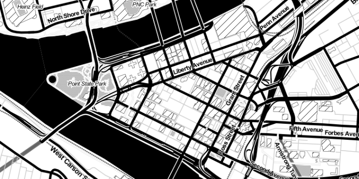

<div class="container">

<div class="hero">
  <h1>{{ page.title }}</h1>

  <p class="lead">Workshop for <a href="https://www.graphicalweb.org/2015">The Graphical Web 2015</a>, Pittsburgh, PA</br>
    Pablo Navarro Castillo, Axiom Zen
  </p>
  
</div>

<hr>

<h4>Contents</h4>

<ul class="table-of-contents">
  <li><a href="{{ site.baseurl }}/pages/overview">1. Creating a Simple Map</a></li>
  <li><a href="{{ site.baseurl }}/pages/getting-data">2. Getting and Transforming Geographic Data</a></li>
  <li><a href="{{ site.baseurl }}/pages/geographic-projections">3. Geographic Projections</a></li>
  <li><a href="{{ site.baseurl }}/pages/interaction">4. Adding Interactions</a></li>
  <li><a href="{{ site.baseurl }}/pages/stars">5. Stars</a></li>
</ul>

</div>
